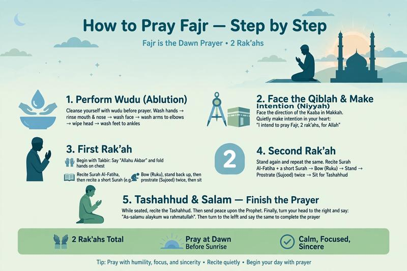

How to Pray Fajr Step by Step: Complete Guide for Beginners [2026]

Fajr is the first prayer of the day and the most blessed. Many new Muslims ask how to pray Fajr correctly - how many rakahs, what to say, and what to recite.
In this beginner guide, you will learn how to pray Fajr step by step with exact Arabic, transliteration, and translation, plus common mistakes to avoid.
Table of Contents
- Fajr Prayer Overview - How Many Rakahs?
- What to Do Before Fajr Prayer
- How to Pray Fajr Step by Step (2 Rakahs)
- What to Recite in Fajr Prayer?
- What to Do After Fajr - Adhkar
- FAQs
Fajr Prayer Overview - How Many Rakahs?
Fajr has 4 rakahs total:
- 2 Sunnah Mu'akkadah (highly recommended) - Before the Fard, very important. Prophet ﷺ never left them.
- 2 Fard (obligatory) - The main Fajr prayer that you must pray.
Time: From true dawn (Fajr Sadiq) until sunrise. Best to pray early.
What to Do Before Fajr Prayer
- Purification: Have valid wudu or ghusl or tayammum.
- Clean clothes & place: Clothes and place must be clean from impurity.
- Face Qibla: Face the direction of Kaaba in Makkah.
- Make Intention (Niyyah): In your heart: "I intend to pray 2 rakahs Fard Fajr for Allah."
How to Pray Fajr Step by Step (2 Fard Rakahs)
Rakah 1:
1. Takbiratul Ihram: Raise hands to ears and say "Allahu Akbar"
2. Dua al-Istiftah (Opening Dua): "Subhanaka Allahumma wa bihamdik..."
3. Al-Fatiha: Recite Surah Al-Fatiha
4. Short Surah: Recite a short surah like Al-Ikhlas, Al-Falaq, or An-Nas. In Fajr, Sunnah is to recite longer surahs from 60-100 verses if you can, but short surah is okay for beginners.
5. Ruku: Bow and say "Subhana Rabbiyal Adheem" (3x)
6. Stand up: Say "Sami' Allahu liman hamidah, Rabbana wa lakal hamd"
7. Sujud: Prostrate and say "Subhana Rabbiyal A'la" (3x) - Do it twice
Rakah 2:
8. Stand up for second rakah, recite Al-Fatiha + another short surah
9. Ruku and Sujud as before
10. Tashahhud: Sit and recite At-Tahiyyat lillah...
11. Salat Ibrahimiyyah: "Allahumma salli ala Muhammad..."
12. Dua: You can make dua before salam
13. Salam: Turn head right "As-salamu alaykum wa rahmatullah" then left.
📚 After Fajr - Don't Miss This
Fajr is not complete without Adhkar. The Prophet ﷺ used to make adhkar after every prayer:
What to Recite in Fajr Prayer?
For beginners, you can recite these short surahs:
- Surah Al-Ikhlas (112) - Easiest
- Surah Al-Falaq (113)
- Surah An-Nas (114)
- Surah Al-Kawthar (108) - Shortest
As you improve your reading, learn what Tajweed is and why it is important and avoid common Tajweed mistakes beginners make.
Common Mistakes in Fajr Prayer
- Praying after sunrise intentionally - Fajr must be before sunrise.
- Rushing without calmness (tumaninah) - Each position must be calm.
- Not reciting Al-Fatiha - Prayer is invalid without Al-Fatiha.
- Missing the 2 Sunnah before Fajr - They are more rewarding than the world and what is in it.
📚 Complete Salah & Learning Path
Frequently Asked Questions
Can I pray Fajr after sunrise?
If you missed Fajr due to sleep, pray as soon as you wake up. If you intentionally delay after sunrise without excuse, it is a major sin. Make tawbah and pray immediately.
What if I miss the 2 Sunnah before Fajr?
You can pray them after the Fard Fajr, before sunrise, or after sunrise. The Prophet ﷺ allowed it.
Do I need to recite loudly in Fajr?
Yes, Fajr is a loud prayer (jahri). Both rakahs are recited aloud - Al-Fatiha and the short surah should be audible.
What to say after Fajr prayer?
Say Astaghfirullah 3 times, then complete adhkar. See our detailed guide: What to Say After Salah - Adhkar.